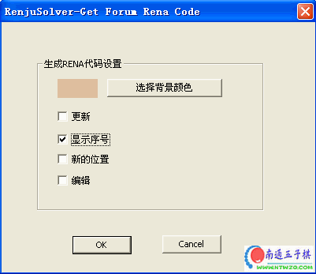
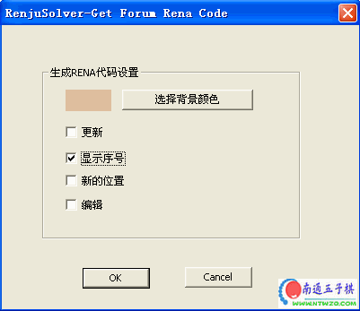

在打谱软件中通过鼠标点击落子，如果需要在某个点上加上注释文字，如图中的“a、B、爱五子棋”等字样，可以按住ctrl键再点击鼠标左键。

详细讲解如何发布互动棋谱，将你有疑问的、值得记录的局面发布上来大家交流
[hf]
第一步下载：
“爱五子棋”打谱软件，地址：ShowPost.asp?ThreadID=1043
第二步打谱：
在打谱软件中通过鼠标点击落子，如果需要在某个点上加上注释文字，如图中的“a、B、爱五子棋”等字样，可以按住ctrl键再点击鼠标左键。
爱五子棋打谱软件生成的代码是多分支的，你在爱五子棋网站看到的那些定式谱就是。
第三步生成代码：
点击论坛菜单，选择第一个子菜单“rena applet代码” 

如果你希望网友能在你发布的互动谱上随意落子，那么选中“更新”；
如果你打谱是题目，没有落子顺序，那么可以不选择“显示序号”，如果是实战谱那么应该选择“显示序号”
第四步发布棋谱：
到论坛中发布帖子，选择代码方式，看下图中，默认是设计方式，请点击代码方式。
粘贴刚才生成的代码〔ctrl+v〕，或者发布窗口点击鼠标右键选择粘贴，出现的代码如下：
<br><APPLET height=354 hspace=3 width=330 align=center code=Rena.class>
<param name="bgcolor" value="debe9e">此行为互动谱背景颜色，可以删除此行，删除后互动谱为白色背景
<param name="update" value="t">此行中value的值为t，那么互动谱将可以随意落子；为f则不可以随意落子，此行可以删除，删除则不能随意落子。
<param name="shownum" value="f">此行中value的值为f，那么互动谱中的子将不显示编号，为t则显示编号；此行可以删除，删除将显示落子编号
<param name="newpos" value="f">此行可以删除，建议删除
<param name="editor" value="f">此行也可以删除，建议删除
<param name="data" value="f040">此行是棋谱信息，当然不能删除
</APPLET><br>
调整后的代码如下：
<br><APPLET height=354 hspace=3 width=330 align=center code=Rena.class>
<param name="data" value="7840">
</APPLET><br>
这样就可以发布了，如果你还想配一些说明文字，可以在打谱时写上注释，也就是右边第一个输入框，这样会在生成的互动谱下方显示说明文字，这样说明文字永远跟随棋谱一起走了；也可以在发布互动谱后面加说明文字。如下所示
<br><APPLET height=354 hspace=3 width=330 align=center code=Rena.class>
<param name="data" value="7840">
</APPLET><br> 说明文字添加处
[/hf]
［此帖子已被 有志青年 在 2011-10-9 9:32:51 编辑过］
学习
学习一下
认真学习
想看看。呵呵